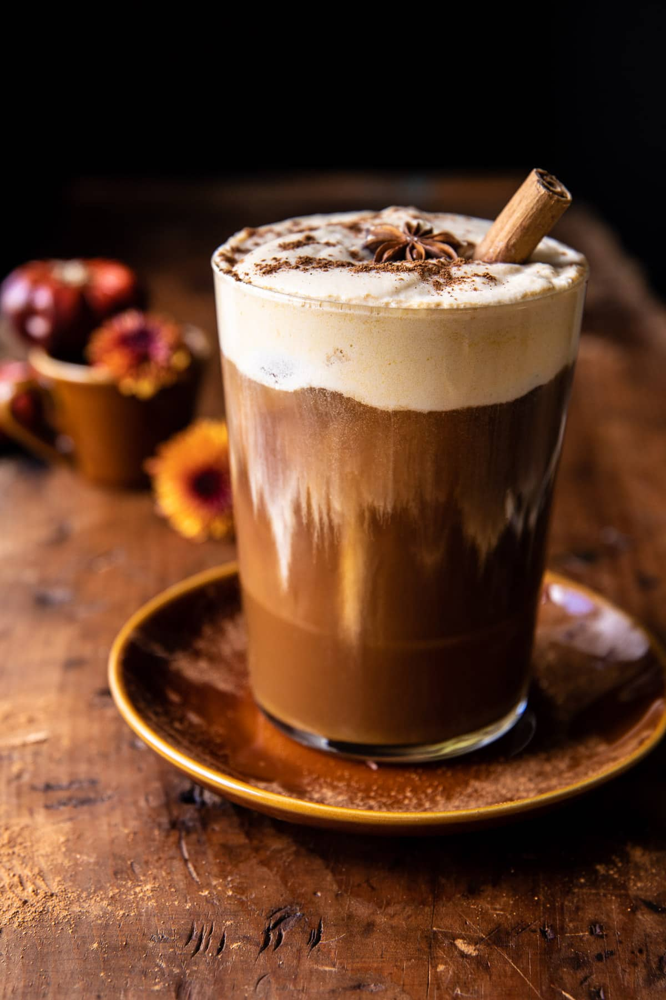

Vanilla Chai Pumpkin Cream Cold Brew

The best ever Pumpkin Butter Chocolate Chip Cookies.
Homemade pumpkin chocolate chip cookies, made with browned butter, pumpkin butter, pumpkin spice, and plenty of chocolate.
Each cookie dough ball is rolled through cinnamon sugar before baking to perfection.
Ingredients
Vanilla Chai Sryup
- 4 cup brown sugar
- 1 cinnamon stick or 1 teaspoon cinnamon
- 1 tablespoon vanilla extract
- 3 chai tea bags
Pumpkin Cold Brew
- 1/4 cup heavy cream
- 2 tablespoons milk
- 1 tablespoon pumpkin puree
- 1 tablespoon pumpkin puree
- 2-3 dashes pumpkin pie spice
Instructions
- Bring 1 cup water, the brown sugar, and cinnamon stick to a boil in a small pot.
Simmer 2-3 minutes, until the sugar dissolves. Remove from the heat and add the vanilla and tea bags, cover,
and steep 10 minutes.
Keep in the fridge for up to 2 weeks.
- In a glass jar combine the cream, milk, pumpkin, and 1 tablespoon vanilla syrup.
Vigorously shake for 1-2 minutes, until thickened and foamy on top.
Alternately you can use a a frother as well.
- In a tall glass filled with ice, combine the espresso, 1-2 tablespoons syrup, and a couple dashes of pumpkin pie spice, stir.
Pour over the sweet pumpkin cream and then drizzle over a little more syrup and a sprinkle of pumpkin pie spice.
Stir well to combine. Enjoy!